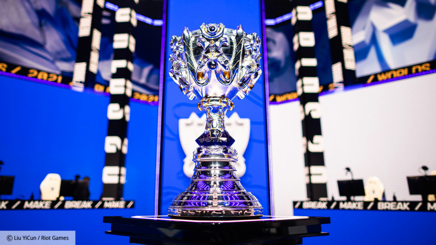

Во время церемонии The Game Awards 2022 были названы не только лучшие игры года, но и победители в киберспортивных номинациях. Лучшим турниром года уже второй раз подряд признан World Championship по League of Legends, который проходил с 29 сентября по 5 ноября в сразу нескольких странах Северной Америки. Лучшей киберспортивной дисциплиной признан Valorant. И остальные киберноминации выиграли представители этой дисциплины.
Так, лучшим киберспортивным коллективом признан бразильский состав Loud, который стал победителем Valorant Champions 2022. Лучшим киберспортсменом года признан Джейкоб Yay Уайтекер из OpTic Gaming, занявший второе место на чемпионате мира.
А лучшим тренером года стал Матеус bzkA Тараскони, под руководством которого Loud и стали чемпионами. Больше на Игромании